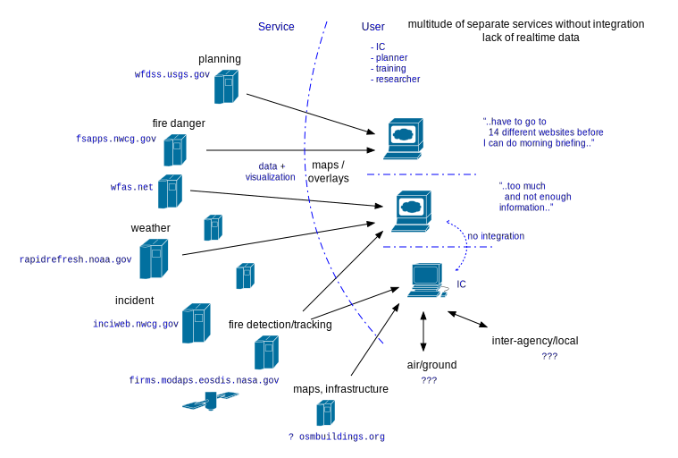

Motivation for RACE-ODIN
ODIN-fire was born out of the observation that the current landscape of wildland fire related data services and websites is very fragmented. There exists a large number of websites and servers providing weather, fire danger/fuel data, active and historical incident maps, satellite-based hotspot detection and much more.
At the same time there are hundreds of stakeholder agencies, research organizations and companies that need to access this data in task specific ways. There is no one-size-fits-all application.
There is currently no easy way to combine this information in a stakeholder/task specific package. Some websites do support selection of layers representing 3rd party data but only from a limited, closed number of sources, and only for the purpose of displaying a web page generated by some server running in the cloud, i.e. requiring internet access.
These external servers especially do not support adding, monitoring and visualizing dynamic stakeholder data such as tracking ground crews, vehicles, aircraft and other assets.
If integration of more external data or (dynamic) internal data is required stakeholders have to develop such systems from scratch, without much domain specific library support. For many stakeholders this is not feasible. For many companies this means they have difficulties making their products available to stakeholders without adding yet another webserver to the cacophony.
ODIN-fire aims at providing this missing integration platform by means of a library that is free and available to the whole stakeholder community. Read more about the ODIN Vision.